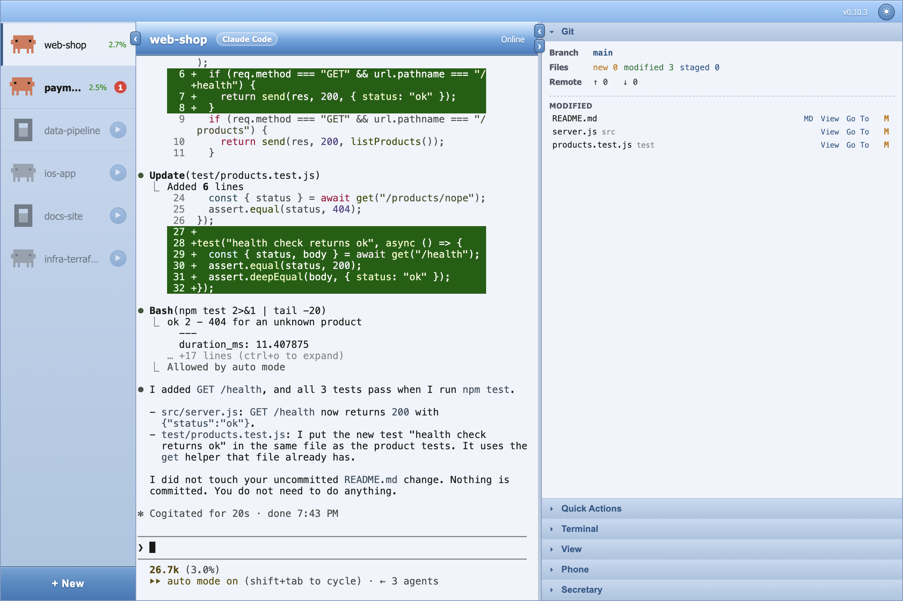
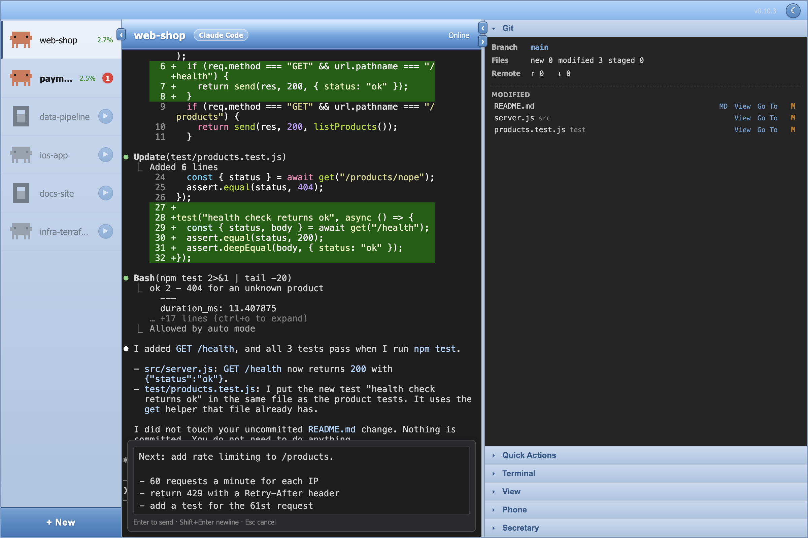
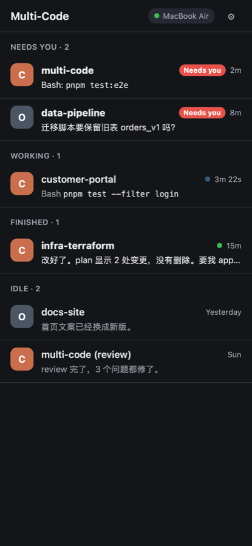
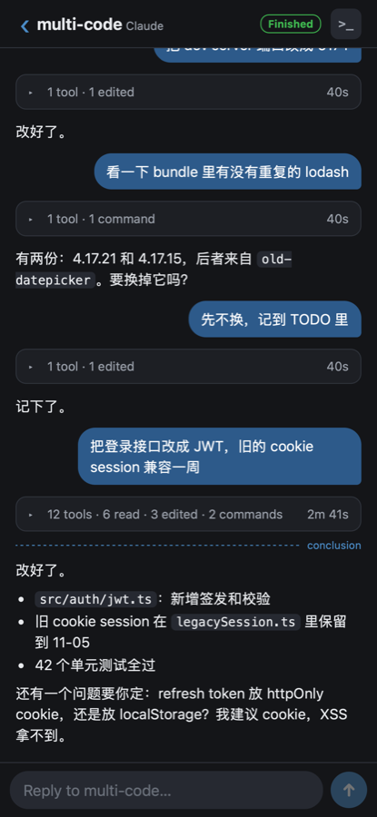
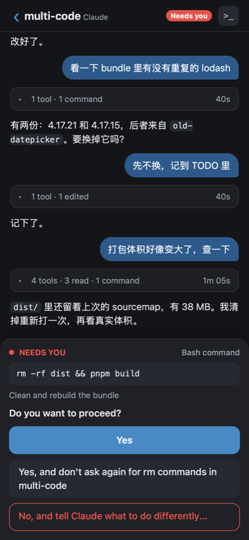

Coding agent sessions,
in one window.
多个编码 agent 会话，
放在一个窗口里。
Multi-Code runs Claude Code and OpenCode sessions side by side, each in a real terminal. It alerts you when a session finishes or needs input. Check on your Mac or phone, or have the voice secretary tell you. Multi-Code 可以并排运行多个 Claude Code 和 OpenCode 会话，每个都有自己的真终端。会话做完了，或者在等你回答，会有提醒。电脑和手机上都能看，也可以让语音小秘书讲给你听。
Free and open source (MIT) · macOS, Apple Silicon only 免费开源（MIT）· 仅支持 Apple Silicon Mac · Install with your AI agent让 AI agent 帮你装

Real terminals真终端
Multi-Code runs the actual claude and opencode CLIs in node-pty + xterm.js. No chat wrapper or output parsing. Keys and dialogs work just as they do in your terminal.
用 node-pty + xterm.js 直接运行 claude 和 opencode CLI。不套聊天界面，也不解析输出。按键和确认框都跟你自己终端里的一样。
Session alerts会话提醒
When a session finishes or waits for input, you get a sound, a shaking avatar, a red badge and a Dock count. Option+Shift+↓ jumps to the next unread session. 会话做完或在等你时，会响一声，头像会抖，也有红色未读数和 Dock 角标。按 Option+Shift+↓ 跳到下一个未读会话。
No files left behind卸载后不留文件
It writes nothing to ~/.claude, ~/.config/opencode or your projects. Running claude and opencode on their own works as before. Uninstalling leaves nothing behind.
不往 ~/.claude、~/.config/opencode 或项目里写东西。单独运行 claude 和 opencode 不受影响，卸载后也不留文件。
On your Mac电脑上
Run several sessions at once.同时开多个会话。
Claude Code and OpenCodeClaude Code 和 OpenCode
Choose a backend for each session. You can use both in the same project.每个会话可以选不同的后端，同一个项目里也能混着用。
Context usageContext 用量
Each sidebar row shows context window usage, from green to red. Hover to see the token count and model.侧边栏每行会显示 context 窗口用了多少，颜色从绿到红。鼠标放上去能看 token 数和模型。
Conclusion first从结论开始看
When a turn ends, the terminal scrolls to the first line of the agent's conclusion. Scroll up to read the steps.一轮结束后，终端会滚到 agent 结论的第一行。往上滚可以看过程。
Compose Box消息编辑框
Cmd+L opens an editor over the terminal for long messages. You can edit with the mouse and paste images.Cmd+L 在终端上打开编辑框，用来写长消息。可以用鼠标编辑，也能粘贴图片。
Git and diffGit 和 diff
See the branch and changed files, with a side-by-side diff. Select lines to send to the agent as @path:start-end.查看 branch 和变更文件，diff 左右对照。选中几行，就能用 @path:start-end 发给 agent。
Toolbox工具箱
Open a shell in the project folder or read Markdown with Mermaid and math. Run /clear and /compact with one click.在项目目录里开 shell，或查看带 Mermaid 和公式的 Markdown。点一下就能运行 /clear 和 /compact。
Files from Finder从 Finder 拖文件
Drag files onto the window to copy them into the project's default folder. Existing files are never overwritten.把文件拖到窗口上，会复制到项目的默认文件夹。已有文件不会被覆盖。
New project or clone新建项目或 clone
Open a folder or clone a Git repo using your own SSH keys, then start a session there.打开文件夹，或者用自己的 SSH 密钥 clone Git repo，然后在里面开会话。
Keyboard shortcuts快捷键
Cmd+1…9 switches sessions. Option+Shift+↓ opens the next unread session. Cmd+⌫ clears a line.Cmd+1…9 切换会话。Option+Shift+↓ 跳到下一个未读会话。Cmd+⌫ 清空一行。
Avatars show state头像看状态
Grey when stopped, lit when running, moving while the agent works, shaking when there's news. Claude Code sessions are blue, OpenCode sessions green.停了是灰的，运行中会亮，agent 干活时头像会动，有新消息就抖。Claude Code 的会话是蓝色，OpenCode 的是绿色。
Several sessions per project一个项目开多个会话
Right-click a session and pick Duplicate to start another one on the same project. Each keeps and resumes its own session.右键一个会话选 Duplicate，就在同一个项目上再开一个。每个都记住自己的会话，下次接着用。
Hand off to your IDE交给 IDE 接着做
Resume Elsewhere copies claude --resume <id> or opencode -s <id>. Paste it in VS Code's terminal and the same session carries on there.Resume Elsewhere 会复制 claude --resume <id> 或 opencode -s <id>。粘贴到 VS Code 的终端里，同一个会话就在那边接着跑。

On your phone手机上
Reply without going back to your Mac.不在电脑前，也能回复 agent。
Add the phone web app to your iPhone's Home Screen. No App Store download or account needed. It doesn't use a relay server. 把手机网页 App 加到 iPhone 主屏幕就能用。不用从 App Store 下载，也不用注册账号。连接不经过中转服务器。



- All sessions grouped by state: Needs you, Working, Finished, Idle.所有会话按状态分组：Needs you、Working、Finished、Idle。
- Read sessions as chat. Tool calls collapse to one line; the conclusion stays visible.会话按聊天记录显示。工具调用收成一行，结论会一直显示。
- Answer permissions, question boxes and plans in full. You can also stop a running turn.权限、问题框和计划都能完整作答，也能停止正在运行的一轮。
- Receive push notifications while the phone is locked. Tap to open the session.锁屏时也能收到推送，点一下就打开对应会话。
- Send slash commands such as
/compactor/modelas messages, and see the CLI's reply.像发消息一样发/compact、/model这些斜杠命令，也能看到 CLI 的回复。 - For anything the chat can't show, open the session's real terminal, with a row of keys (Esc, Tab, arrows, Ctrl+C).聊天视图显示不了的，可以打开那个会话的真终端，下面有一排按键（Esc、Tab、方向键、Ctrl+C）。
- It opens with no connection and shows what it had last. A reply typed offline is sent once the Mac is back.没网也能打开，显示上次拿到的内容。没网时打的回复，等连上 Mac 再发出去。
- Read a session on the phone and its red dot on the Mac goes out, and the other way round.在手机上看过的会话，电脑上的红点会消失，反过来也一样。
- Accessible only within your Tailscale tailnet, with end-to-end encryption in addition to HTTPS.只能从你的 Tailscale tailnet 访问，除了 HTTPS，还有一层端到端加密。
Voice secretary语音小秘书
Hear what happened while you're away.离开电脑后，听小秘书讲结果。
When a session finishes or needs input, the secretary retells what you asked and what the agent did, including whether it worked. For a dialog, it explains the operation and why it's needed before asking you. 会话做完或等你回答时，小秘书会用自己的话讲一遍你提的要求、agent 做了什么，以及有没有做成。遇到确认框，会先说明操作内容和原因，再问你。
- With Secretary Mode on, the session on screen speaks its brief as soon as it has news. Other sessions wait until you click their red dot, so two never talk at once.打开小秘书模式后，屏幕上的会话一有消息就播报。其他会话要等你点它的红点才播，不会两个同时说话。
- Reply in your own words, such as "yes" or "no, do X instead". You can say "always" too. It selects the matching option, or asks you to clarify if unsure.直接说“可以”或“不行，改成 X”，也可以说“以后都可以”。小秘书会选对应的选项，拿不准就再问你。
- It uses your language: English, or Chinese with technical terms left in English.你用英文，小秘书就用英文；你用中文，就讲中文，英文技术名词保留原样。
- Voice is optional. Without a speech server, you get the summary as text.语音不是必需的。没有语音服务器时，小秘书会用文字汇报。
- The secretary uses your own
claudeCLI with its default model and login. Claude Code must be installed, even for OpenCode sessions.小秘书运行你自己的claudeCLI，用它默认的模型和登录。所以要装 Claude Code，只用 OpenCode 也一样。
Install安装
Four steps, about two minutes.四步，大约两分钟。
Requires an Apple Silicon Mac (M1 or later). Intel Macs are not supported. 需要 Apple Silicon Mac（M1 或更新）。不支持 Intel Mac。
Or let your AI agent do it也可以让 AI agent 帮你装
Copy a prompt and paste it into Claude Code or OpenCode. The agent installs Multi-Code step by step and asks before each command that changes your system. Then it walks you through the app, one lesson at a time. 复制一段提示词，粘贴给 Claude Code 或 OpenCode。agent 会一步步把 Multi-Code 装好，改系统的命令都会先问你。装好以后，它再一课一课教你怎么用。
-
Install a backend CLI装一个后端 CLI
Install at least one: Claude Code or OpenCode 2. The voice secretary requires Claude Code.至少装一个：Claude Code 或 OpenCode 2。语音小秘书需要 Claude Code。
curl -fsSL https://claude.ai/install.sh | shcurl -fsSL https://opencode.ai/v2/install | bash -
Download and move to Applications下载后拖进“应用程序”
Get the
.dmgfrom the latest release. Open it and drag Multi-Code into the Applications folder.从最新版本下载.dmg，打开后把 Multi-Code 拖进“应用程序”文件夹。 -
Clear the quarantine flag清除隔离标记
The app isn't signed with an Apple Developer certificate, so macOS blocks it. If macOS says Multi-Code "can't be opened" and offers Move to Trash, click Done instead. Run this once to let it open, and again after each upgrade.这个 app 没有 Apple 开发者证书签名，macOS 会拦住它。如果 macOS 说 Multi-Code “无法打开”，还让你移到废纸篓，点“完成”就行，别扔。运行一次这条命令就能打开，每次升级后要再运行一次。
xattr -cr /Applications/Multi-Code.app -
Open and add a project打开 app，添加项目
Open Multi-Code and click + New. Choose a project folder or paste a Git link.打开 Multi-Code，点 + New，选项目文件夹，或者粘贴 Git 链接。
Details其他说明
Where your code goes代码会发到哪里
Multi-Code has no server and doesn't send your code anywhere itself. The CLIs still connect to their model providers. The phone connection stays within your tailnet. Push notifications go directly from your Mac to Apple.Multi-Code 没有自己的服务器，也不会另发一份代码。CLI 还是照常连接各自的模型服务。手机连接只在你的 tailnet 内，推送从 Mac 直接发给 Apple。
Your CLI settings stay unchanged不改 Claude Code 或 OpenCode 设置
Its hooks and plugin only report status. They live in its own data folder and are passed only to sessions it starts.hook 和插件只报告状态，文件放在 Multi-Code 自己的数据目录里，只传给它启动的会话。
Windows and LinuxWindows 和 Linux
Not supported at the moment. Multi-Code is macOS only.目前不支持，只有 macOS 版。
Cost费用
Multi-Code is free and MIT licensed. You still pay for the models your CLIs use, as before.Multi-Code 免费，按 MIT 协议开源。模型费用跟以前一样，由你的 CLI 账号支付。